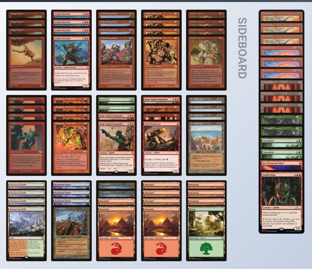
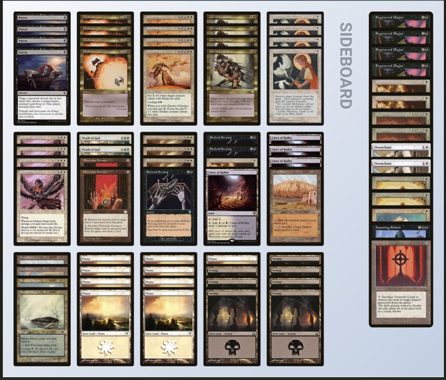

En esta sección encontrarás algunos de los mazos más representativos del formato
Premodern. Reflejan la variedad y profundidad estratégica de esta era:
desde combos elaborados hasta agresión pura y control metódico.
A continuación listamos tres mazos clásicos, muy populares en torneos y mesas de juego.
Cada uno destaca por un enfoque distinto y una historia particular dentro de la comunidad.
Oath es uno de los combos más emblemáticos del formato.
Usa Oath of Druids para poner en juego criaturas determinantes muy pronto,
combinando aceleración, control y una condición de victoria explosiva.
Goblins

Mazo Goblins
Goblins es el arquetipo aggro clásico. Criaturas tribales eficientes y
sinergias que permiten presionar desde el primer turno con gran consistencia.
Deadguy Ale

Mazo Deadguy Ale
Deadguy Ale mezcla descarte y presión con criaturas versátiles,
equilibrando recursos y respuestas para casi todo el metajuego.